NetScaler Management and Analytics System (MAS) 11.1
Navigation
The newer 12.0 version of NetScaler MAS is detailed in a different post.
- Planning
- Import Appliance into vSphere
- IP Configuration and High Availability
- Add Instances
- Licensing
- Enable AppFlow
- NSroot Password
- Management Certificate
- System Configuration
- System Email Notifications
- Authentication
- Analytics (Insight) Thresholds and Alerts
- Geo Map
- Instance Email Alerts (SNMP Traps)
- Director Integration
- Use NetScaler MAS - HDX Insight, Gateway Insight, Security Insight
- Troubleshooting
- Upgrade NetScaler MAS
:idea: = Recently Updated
Planning
NetScaler MAS is a replacement for NetScaler Insight Center, Command Center, and Control Center. It's a combination of these three different tools.
NetScaler MAS is a licensed product. It's free for 30 vServers. Beyond that, licenses can be purchased in 100 vServer packs. Alternatively, you can continue to use Insight Center and/or Command Center.
Requirements for HDX Insight (AppFlow):
- Your NetScaler appliance must be running Enterprise Edition or Platinum Edition.
- NetScaler must be 10.1 or newer.
- HDX Insight works with the following Receivers:
- Receiver for Windows must be 3.4 or newer.
- Receiver for Mac must be 11.8 or newer.
- Receiver for Linux must be 13 or newer.
- Notice no mobile Receivers. See the Citrix Receiver Feature Matrix for the latest details.
- For Session Reliability, NetScaler 10.5 build 54 and newer.
- ICA traffic must flow through a NetScaler appliance:
- One method is to implement ICA Proxy through NetScaler Gateway. You can even do this internally. However Single Sign-on does not work through NetScaler Gateway. To use ICA Proxy without authenticating at NetScaler Gateway, see CTX200129 - How to Force Connections through NetScaler Gateway Using Optimal Gateways Feature of StoreFront.
- Another method is to route ICA traffic through a NetScaler SNIP and use the NetScaler as a router. Citrix Blog Post - How to Deploy NetScaler Insight Center with Policy Based Routing
- Docs.citrix.com How NetScaler insight Center is Deployed in a Network – Transparent Mode, NetScaler Gateway Single-Hop and Double-Hop, LAN User Mode (NetScaler as SOCKS Proxy), CloudBridge, Multi-Hop (NetScaler and CloudBridge with connection chaining)
- New in NetScaler 11 is the ability to use SOCKS proxy (Cache Redirection) for ICA traffic without requiring users to use NetScaler Gateway and without making any routing changes. You configure this on the NetScaler appliance. See Citrix Blog Post Gathering HDX Insight Analytics for LAN Users with NetScaler Using SOCKS for more information.
For ICA round trip time calculations, in a Citrix Policy, enable the following settings:
- ICA > End User Monitoring > ICA Round Trip Calculation
- ICA > End User Monitoring > ICA Round Trip Calculation Interval
- ICA > End User Monitoring > ICA Round Trip Calculation for Idle Connections
Citrix CTX204274 How ICA RTT is calculated on NetScaler Insight: ICA RTT constitutes the actual application delay. ICA_RTT = 1 + 2 + 3 + 4 +5 +6:
- Client OS introduced delay
- Client to NS introduced network delay (Wan Latency)
- NS introduced delay in processing client to NS traffic (Client Side Device Latency)
- NS introduced delay in processing NS to Server (XA/XD) traffic (Server Side Device Latency)
- NS to Server network delay (DC Latency)
- Server (XA/XD) OS introduced delay (Host Delay)
The version/build of NetScaler MAS must be the same or newer than the version/build of the NetScaler appliances.
Import Appliance
You can use either the vSphere Client, or the vSphere Web Client, to import the appliance. In vSphere Client, open the File menu, and click Deploy OVF Template. vSphere Web Client instructions are shown below.
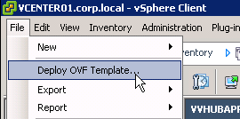
You might see this operating system error when not using the vSphere Web Client. Click Yes to proceed. It seems to work.
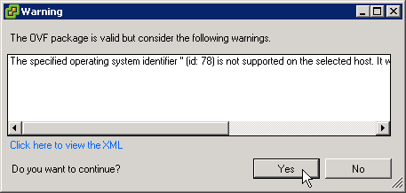
- Download NetScaler MAS for ESX, and then extract the .zip file.
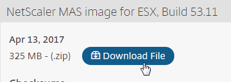
- In vSphere Web Client, right-click a cluster, and click Deploy OVF Template.
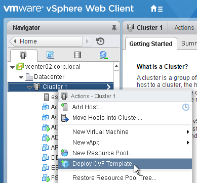
- In the Select source page, select Local file, and browse to the NetScaler MAS .ovf files. Click Next.
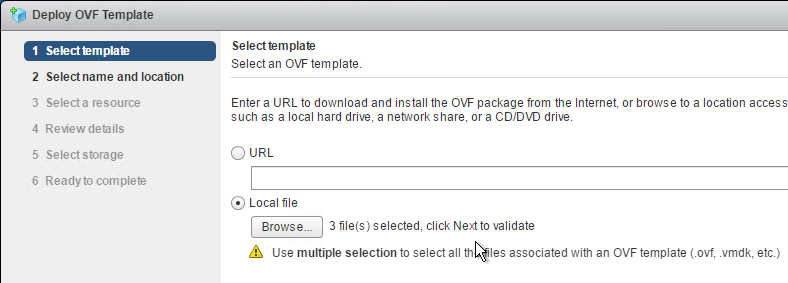
- In the Review details page, click Next.
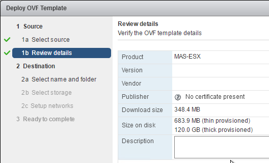
- In the Select name and folder page, enter a name for the virtual machine, and select an inventory folder. Then click Next.
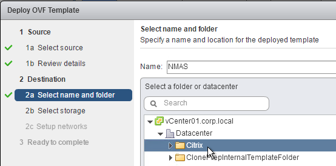
- In the Select a resource page, select a cluster or resource pool, and click Next.
- In the Select storage page, select a datastore. If a single appliance, or if a database appliance, due to high IOPS, SSD or Flash is recommended.
- Change the virtual disk format to Thin Provision. Click Next.
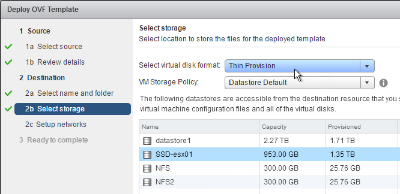
- In the Setup networks page, choose a valid port group, and click Finish.
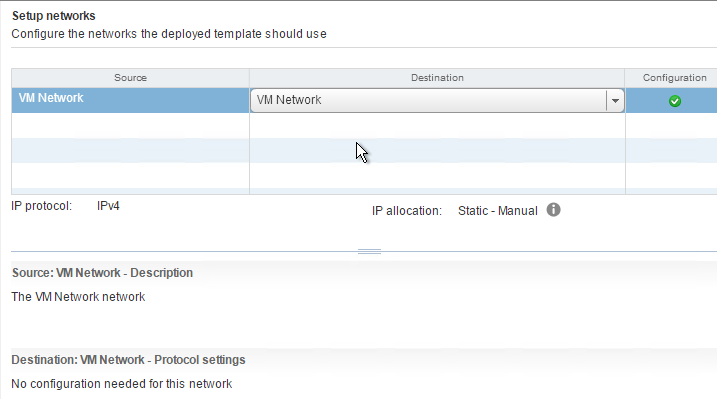
- In the Ready to Complete page, check the box next to Power on after deployment, and click Finish.
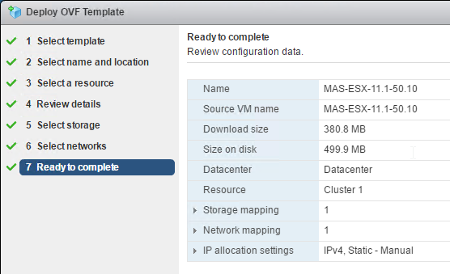
- If you try to power on the VM, and you see a message about freeBSD not being supported, then you might have to upgrade the VM Hardware Compatibility Level. VM hardware version 4 seems to be too old. :idea:
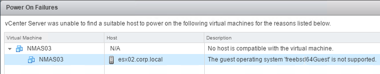
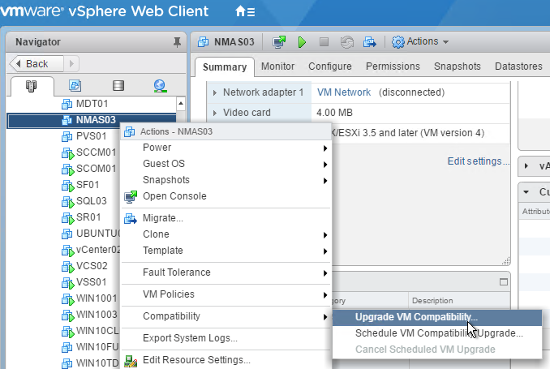
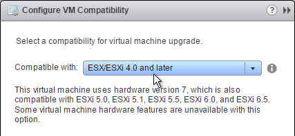
- CTX219344 How to Increase Storage space for NetScaler MAS: power off appliance, add a second disk that's larger than the first, then power on the appliance. :idea:
IP Configuration and High Availability
- Open the console of the virtual machine, and configure an IP address.
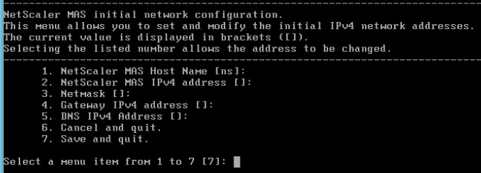
- Enter 7 when done.
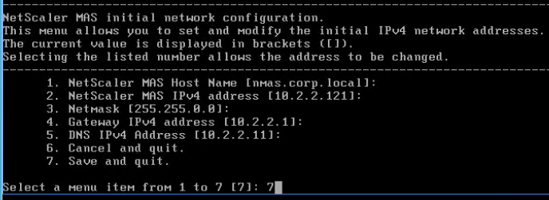
- When prompted for Deployment Type, enter 1 for NetScaler MAS Server. The first appliance must always be NetScaler MAS Server. Notice the new option for Remote Backup Node. :idea:
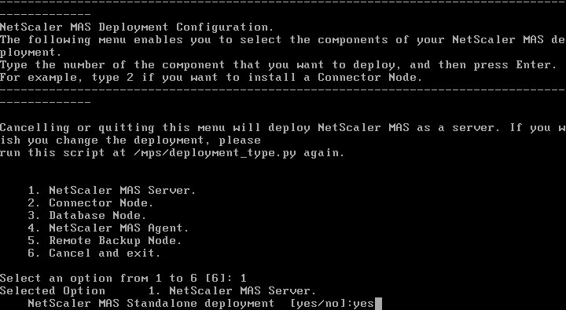
- If you want to deploy two NMAS appliances and HA pair them, enter no for Standalone and yes for First Server Node.
- Note: HA is only for database redundancy. All other traffic (SNMP, AppFlow) only goes to one node.
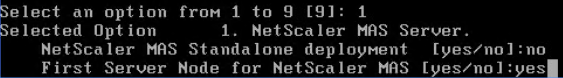
- Enter Yes to reboot.
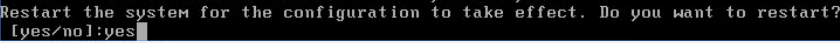
- Deploy another appliance.
- This time, when asked if First Server Node, enter no. You will then be asked for the IP address of the first node. Enter the nsroot password.
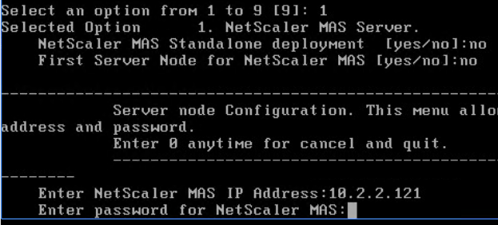
- From CTX220000 How to reboot or shutdown Netscaler MAS using CLI: when using the MAS CLI, do not use the reboot command since it will cause data corruption. Instead, run shutdown -r now.
- If you need to add a static route to NetScaler MAS, then see CTX223282 How to Add a Static Route on NetScaler MAS. :idea:

- Once you’ve built all of the nodes, point your browser to the primary NetScaler MAS IP address and login as nsroot/nsroot.
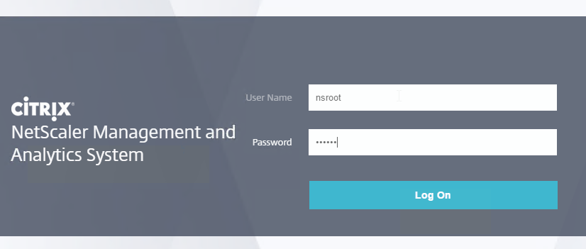
- If you see CUXIP, either Skip or Enable the Customer User Experience Improvement Program.
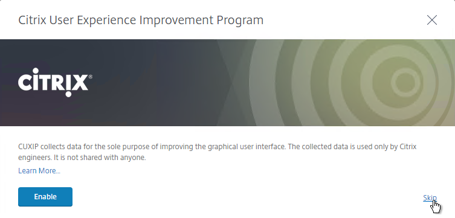
- Click Get Started
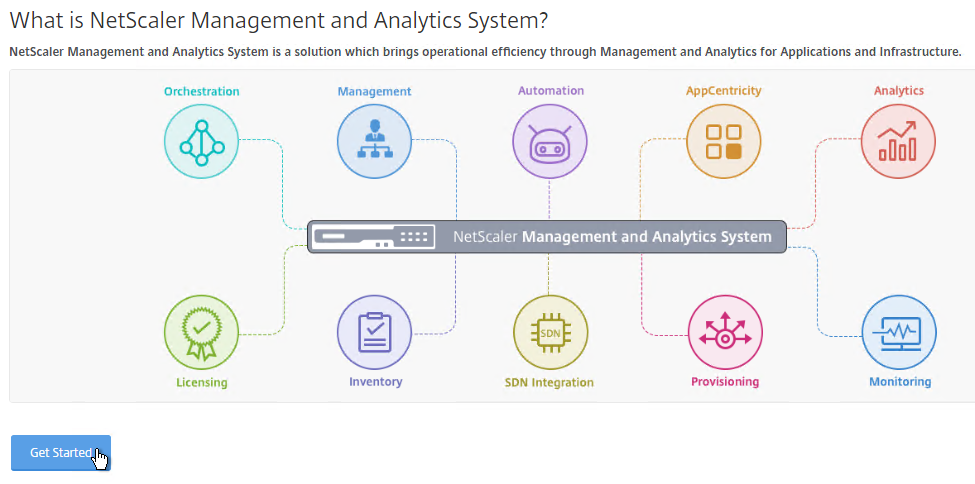
- Select Two servers deployed in High Availability Mode, and click Next.
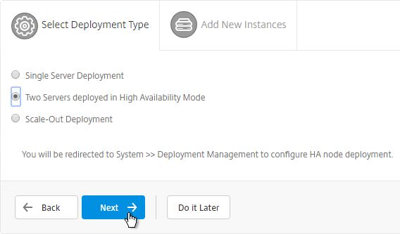
- It should show both nodes. Click Deploy on the top right.
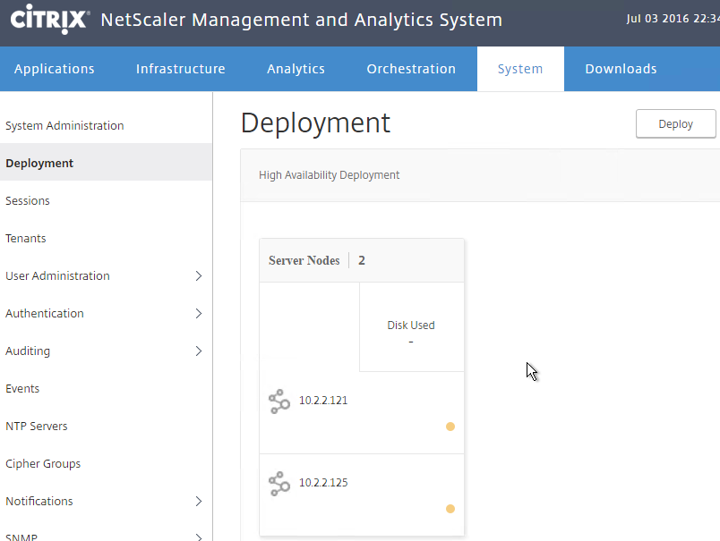
- Click Yes to reboot the appliances.
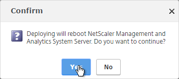
- If you login to one of the appliances, at System > Deployment, you’ll see the performance of each node. Notice the Break HA icon on the top right.
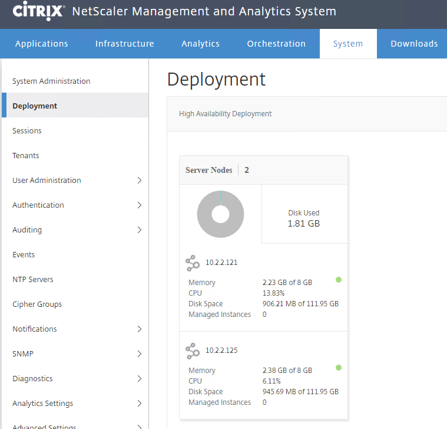
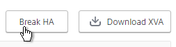
- You can manage the pair by logging in to either node.
- Or you can load balance the pair. Load Balancing is only useful for administration. All other communications (e.g. SNMP, AppFlow) go directly to one of the nodes. See High Availability Deployment at Citrix Docs for load balancing instructions.
Add Instances
NetScaler MAS must discover NetScaler instances before they can be managed. Citrix Docs How NetScaler MAS Communicates with Managed Instances.
- Login to one of the NetScaler MAS appliances.
- If you see the Get Started page, click Get Started.
- In the Select Deployment Type page, click Next.
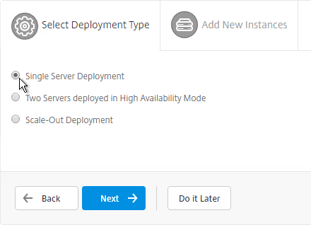
- On the Add New Instances page, click + New near the top right.
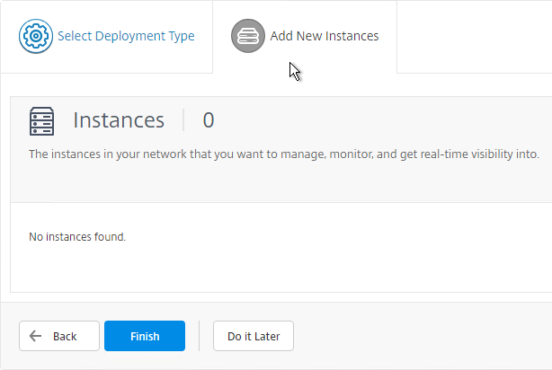
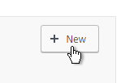
- Enter the NSIP address of a NetScaler appliance.
- Click the pencil next to ns_nsroot_profile.
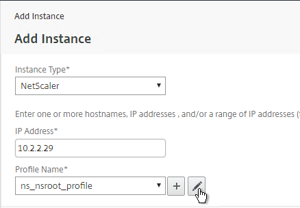
- Enter the password for the nsroot account.
- Enter an SNMP community string that NetScaler MAS will configure on the appliance.
- The NetScaler Profile defaults to using https for instance communication. Click OK.
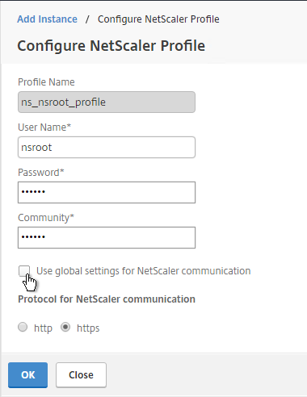
- Then click OK to add the instance.
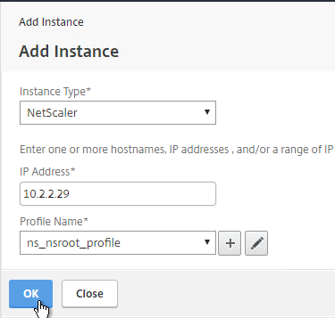
- A progress window will appear.
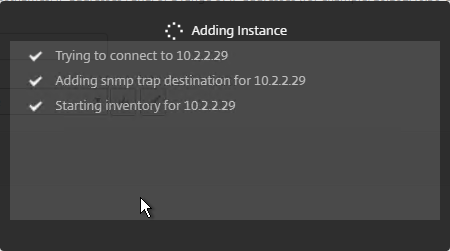
- You can add more instances, or just click Finish.
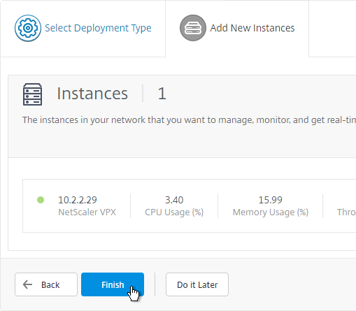
- To add more instances later, go to Infrastructure > Dashboard, and on the top right, click All Instances.
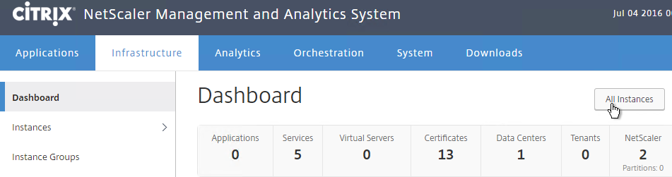
- Then click New.
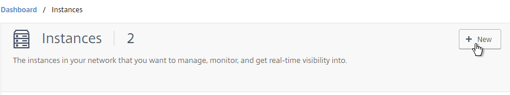
Licenses
Virtual Server License Packs
Without licenses, NetScaler MAS only shows 30 Virtual Servers. You can install additional licenses in 100 Virtual Server packs.
- Go to Infrastructure > Licenses > Settings.
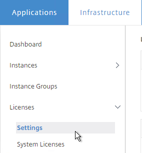
- On the right, notice the Host ID. Allocate your NetScaler MAS licenses to this Host ID. Then use the Browse button to upload the allocated license file.
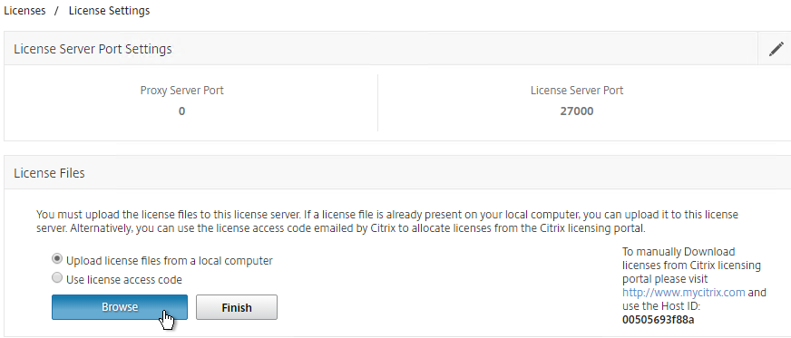
- You can use the Notification Settings section to email you when licenses are almost fully consumed or about to expire.
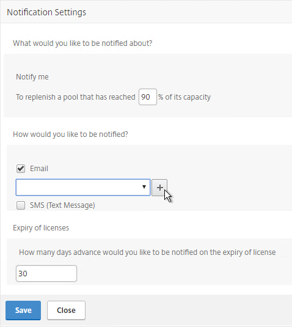
Allocate licenses to Virtual Servers
If you have fewer Virtual Servers than the number of installed licenses, then licenses are automatically assigned to all Virtual Servers. You can manually unassign a license and reassign it to a different Virtual Server.
- Go to Infrastructure > Licenses > System Licenses.
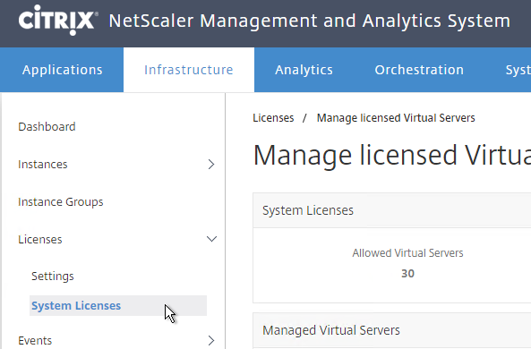
- On the top right, click Modify licensed Virtual Servers.
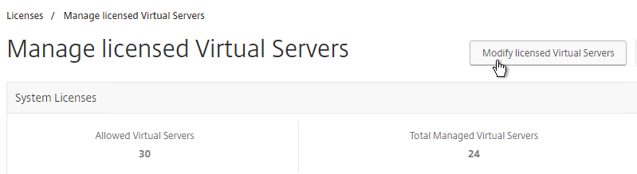
- In the top row, select the type of Virtual Server you want to unlicense or license.
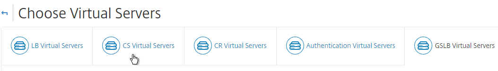
- Select one or more Virtual Servers, and click the Mark Unlicensed button.
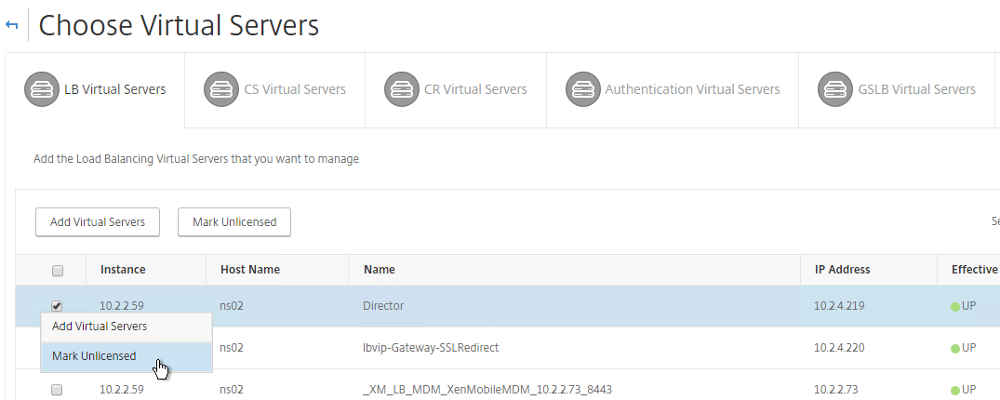
- Click Yes when asked to mark unlicensed.
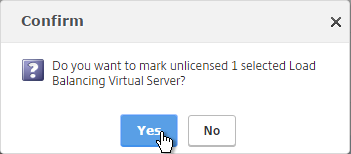
- To allocate a license to a Virtual Server, click the Add Virtual Servers button.
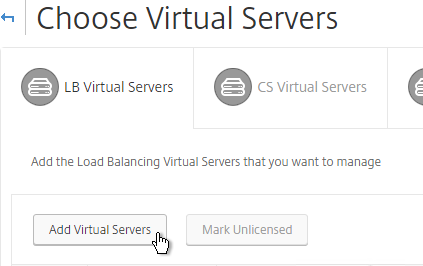
- Select the Virtual Server(s) you want to allocate and click Select.
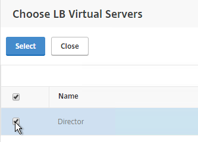
- Click Finish now when done.
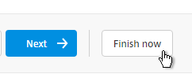
Enable AppFlow / Insight
- Go to Infrastructure > Instances > Instance type (e.g. NetScaler VPX).
- Click the ellipsis next to an instance, and then click Enable/Disable Insight.
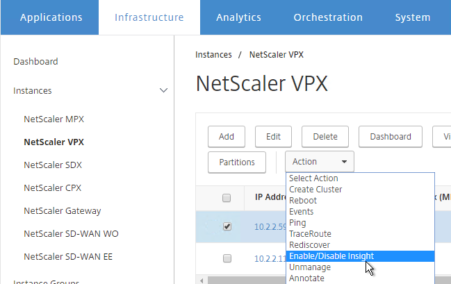
- At the top of the page are boxes you can check.
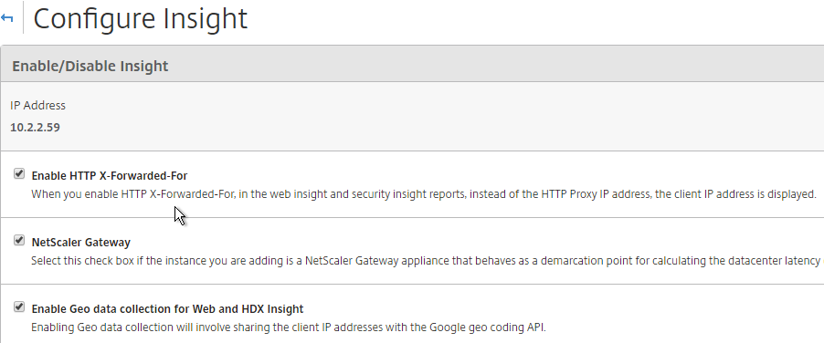
- With Load Balancing selected in the View list, click the ellipsis next to your StoreFront load balancer, and click Enable AppFlow.
- Type in true.
- Select Web Insight. If App Firewall is enabled on the vServer then also select Security Insight.
- HTML Injection injects JavaScript in HTTP responses to measure page load times.
- Click OK.
- Use the View drop-down to select VPN.
- Click the ellipsis next a NetScaler Gateway Virtual Server, and click Enable AppFlow.
- In the Select Expression drop-down, select true.
- For Export Option, select ICA and HTTP, and click OK. The HTTP option is for Gateway Insight.
- The TCP option is for the second appliance in double-hop ICA. If you need double-hop then you’ll also need to run
set appflow param -connectionChaining ENABLEDon both appliances. See Enabling Data Collection for NetScaler Gateway Appliances Deployed in Double-Hop Mode at docs.citrix.com for more information. - By default, with AppFlow enabled, if a NetScaler High Availability pair fails over, all Citrix connections will drop, and users must reconnect manually. NetScaler 11.1 build 49 adds a new feature to replicate Session Reliability state between both HA nodes.
- From Session Reliability on NetScaler High Availability Pair at Citrix Docs: Enabling this feature will result in increased bandwidth consumption, which is due to ICA compression being turned off by the feature, and the extra traffic between the primary and secondary nodes to keep them in sync.
- If you still want this feature, on NetScaler 11.1 build 49 and newer, go to System > Settings.
- On the right, click Change ICA Parameters.
- Check the box next to Session Reliability on HA Failover, and click OK.
- AppFlow (e.g. HDX Insight) information can be viewed in NetScaler MAS on the Analytics tab.
Citrix Blog Post - NetScaler Insight Center – Tips, Troubleshooting and Upgrade
Nsroot Password
- On the System tab, expand User Administration, and click Users.
- On the right, click the ellipsis next to the nsroot account, and click Edit.
- Enter a new password.
- You can also specify a session timeout. Click OK.
Management Certificate
The certificate to upload must already be in PEM format. If you have a .pfx, you must first convert it to PEM (separate certificate and key files). You can use NetScaler to convert the .pfx, and then download the converted certificate from the appliance.
- On the System tab, go to System Administration.
- On the right, click Install SSL Certificate.
- Click Choose File to browse to the PEM format certificate and key files. If the keyfile is encrypted, enter the password. Click OK.
- Click Yes to reboot the system.

System Configuration
- Click the System tab on the top of the page.
- On the left, click the System Administration node.
- On the right, modify settings (e.g.Time Zone) as desired.
- To change the Session Timeout, click Change System Settings.
- On the right column are additional settings. For example, System Prune Settings, which defaults to deleting SNMP traps after 15 days.
- Instances Backup Settings lets you configure the number of backup files to retain for each instance.
- There are more settings under System > Analytics Settings.
- ICA Session Timeout can be configured by clicking the link. Two minutes of non-existent traffic must occur before the session is considered idle. Then this idle timer starts.
- If you are using Web Insight, Configure Data Record Settings lets you enable Reports on the dashboard.
- Auditing > Syslog Purge Settings controls how long Syslog data is retained (15 days by default).
- On the left, click NTP Servers.
- On the right, click Add.

- After adding NTP servers, click NTP Synchronization.
- Check the box next to Enable NTP Synchronization, and click OK.
- Click Yes to restart.
- On the System tab, on the left, expand Auditing, and click Syslog Servers.
- On the right, click Add.
- Enter the syslog server IP address, and select Log Levels. Click Create.
- You can click Syslog Parameters to change the timezone and date format.
System Email Notifications
- On the System tab, on the left, expand Notifications, and click Email.
- On the right, on the Email Servers tab, click Add.
- Enter the SMTP server address, and click Create.
- On the right, switch to the Email Distribution List tab, and click Add.
- Enter an address for a destination distribution list, and click Create.
- On the left, click Notifications.
- On the right, click Change Notification Settings.
- Move notification categories (e.g. UserLogin) to the right.
- Select a notification distribution list. Then click OK.
Authentication
- On the System tab¸ expand Authentication, and click LDAP.
- On the right, click Add.
- This is configured identically to NetScaler. Enter a Load Balancing VIP for LDAP. Change the Security Type to SSL, and Port to 636. Scroll down.
- Enter the bind account credentials.
- Check the box for Enable Change Password.
- Click Retrieve Attributes, and scroll down.

- For Server Logon Attribute, select sAMAccountName.
- For Group Attribute, select memberOf.
- For Sub Attribute Name, select cn.
- To prevent unauthorized users from logging in, configure a Search Filter. Scroll down.

- If desired, configure Nested Group Extraction.
- Click Create.

- On the left, expand User Administration, and click Groups.
- On the right, click Add.
- Enter the case sensitive name of your NetScaler Admins group.
- Select the admin Permission.
- If desired, configure a Session Timeout. Click Next.
- On the Select Applications page, click Finish.
- On the left, click User Administration.
- On the right, click User Lockout Configuration.
- If desired, check the box next to Enable User Lockout, and configure the maximum logon attempts. Click OK.
- On the left, click Authentication.
- On the right, click Authentication Configuration.
- Change the Server Type to EXTERNAL, and click Insert.
- Select the LDAP server you created, and click OK.
- Make sure Enable fallback local authentication is checked, and click OK.
Analytics Thresholds
- Go to Analytics Settings > Thresholds.
- On the right, click Add.
- Enter a name.
- Use the Traffic Type drop-down to select HDX or Web.
- Use the Entity drop-down to select a category of alerts. What you choose here determines what’s available in the Rule section.
- Check the box to Enable Alert.
- Check the box to Notify through Email.
- In the Rule section, select a rule, and enter threshold values. Click Create.
Geo Map
- Download the Maxmind database from http://geolite.maxmind.com/download/geoip/database/GeoLiteCity.dat.gz.
- Extract the .gz file.
- On the System tab, expand Advanced Settings, and click Geo Database Files.
- On the right, click Upload.
- Browse to the extracted GeoLiteCity.dat file, and click Open.
- You can also define Geo locations for internal subnets. Go to Infrastructure > Dashboard > Data Centers.
- On the right, click Add.
- Enter a name.
- Enter the starting and ending IP address.
- Select a Geo Location.
- Click Create.
Instance Email Alerts (SNMP Traps)
You can receive email alerts whenever a NetScaler appliance sends a critical SNMP trap.
- Go to Infrastructure > Events > Rules.
- On the right, click Add.
- Give the rule a name.
- Move Severity filters (e.g. Major, Critical) to the right.
- While scrolling down you'll see additional alert filters.
- On the bottom of the page, click Add Action.
- Select an Action Type (e.g. Send e-mail), and select the recipients (or click the plus icon to add recipients).
- Click OK.
- Then click Create.
Director Integration
Integrating NetScaler MAS with Director adds Network tabs to Director's Trends and Machine Details views. Citrix Blog Post Configure Director with Netscaler Management & Analytics System (MAS) 
Requirements:
- XenApp/XenDesktop must be licensed for Platinum Edition. This is only required for the Director integration. Without Platinum, you can still access the HDX Insight data by going visiting the NetScaler MAS website.
- Director must be 7.11 or newer for NetScaler MAS support.
- NetScaler MAS must be 11.1 build 49 or newer.
To link Citrix Director with NetScaler MAS, on the Director server, run C:\inetpub\wwwroot\Director\tools\DirectorConfig.exe /confignetscaler.
- Enter the NetScaler MAS nsroot credentials.
- If HTTPS Connection (recommended), the NetScaler MAS certificate must be valid and trusted by both the Director Server and the Director user's browser.
- Enter 1 for NetScaler MAS.
- Do this on both Director servers.
Use NetScaler MAS
Marius Sandbu NetScaler Management and Analytics Systems has a quick rundown of the major features.
The AppFlow Analysis tools (e.g. HDX Insight) are located on the Analytics tab.
NetScaler MAS also includes all of the previous Command Center functionality, which you can find on the Infrastructure and Applications tabs. For example, on the Infrastructure tab, select an instance, and view its Dashboard.
Backups are available at View Backup.
Dave Bretty Automating Your Netscaler 11.1 Vserver Config Using Netscaler Management and Analytics System: use a Configuration Job to deploy StoreFront load balancing configuration to an instance.
On the Applications tab, Dashboard node, Applications sub-tab, you can click New Application to group vServers together so they can be monitored as a group.
Links:
- Citrix CTX220158 Various Enhancements and Newly Added Features in NetScaler MAS release 11.1 51.21 :idea:
- NetScaler MAS How-to Articles at Citrix Docs.
HDX Insight
HDX Insight Dashboard displays ICA session details including the following:
- WAN Latency
- DC Latency
- RTT (round trip time)
- Retransmits
- Application Launch Duration
- Client Type/Version
- Bandwidth
- Licenses in use
HDX Insight can also display Geo Maps. Configure NetScaler MAS with Data Center definitions (private IP blocks). More info at Geo Maps for HDX Insight at Citrix Docs.
Gateway Insight
On the Analytics tab is Gateway Insight.
This feature displays the following details:
- Gateway connection failures due to failed EPA scans, failed authentication, failed SSON, or failed application launches.
- Bandwidth and Bytes Consumed for ICA and other applications accessed through Gateway.
- # of users
- Session Modes (clientless, VPN, ICA)
- Client Operating Systems
- Client Browsers
More details at Gateway Insight at Citrix Docs.
Security Insight
The Security Insight dashboard uses data from Application Firewall to display Threat Index (criticality of attack), Safety Index (how securely NetScaler is configured), and Actionable Information. More info at Security Insight at Citrix Docs.
Troubleshooting
Citrix CTX215130 HDX Insight Diagnostics and Troubleshooting Guide: Syslog messages; Error counters; Troubleshooting checklist, Logs
Citrix Blog Post - NetScaler Insight Center – Tips, Troubleshooting and Upgrade
See docs.citrix.com Troubleshooting Tips. Here are sample issues covered in docs.citrix.com:
- Can’t see records on Insight Center dashboard
- ICA RTT metrics are incorrect
- Can’t add NetScaler appliance to inventory
- Geo maps not displaying
Upgrade NetScaler MAS
- Download the latest Upgrade Pack for NetScaler Management and Analytics System.
- Login to NetScaler MAS.
- On the System tab, on the left, click the System Administration node.
- On the right, in the right pane, click Upgrade NetScaler MAS.
- Browse to the Software Image Upgrade Pack .tgz file and click OK.
- Click Yes to reboot the appliance.
- After it reboots, login. The new firmware version will be displayed in the top right corner.